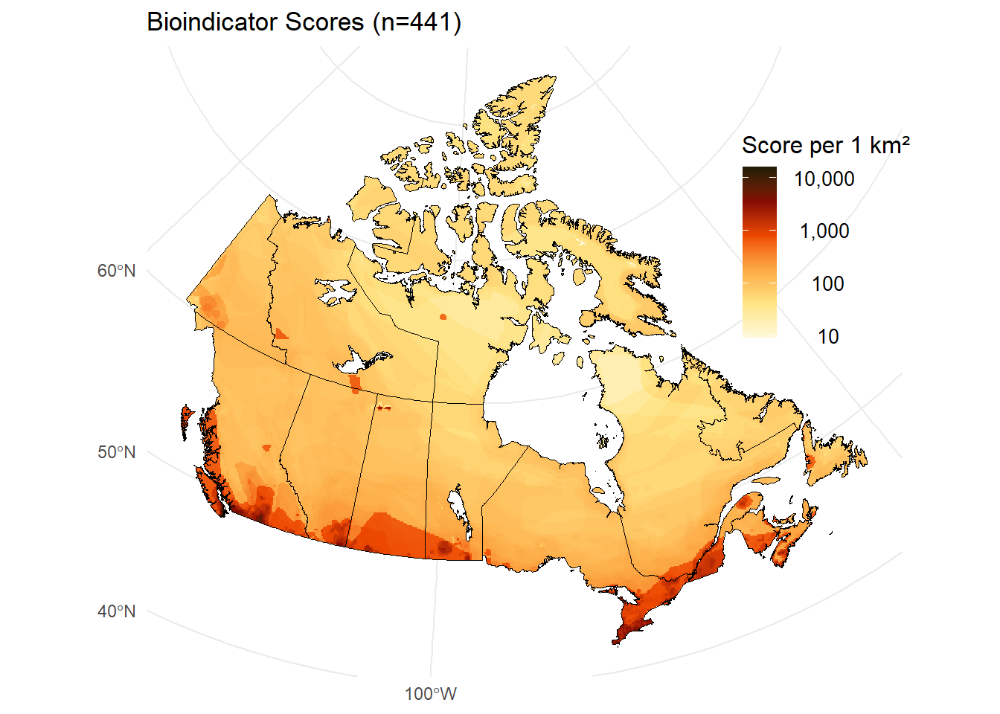
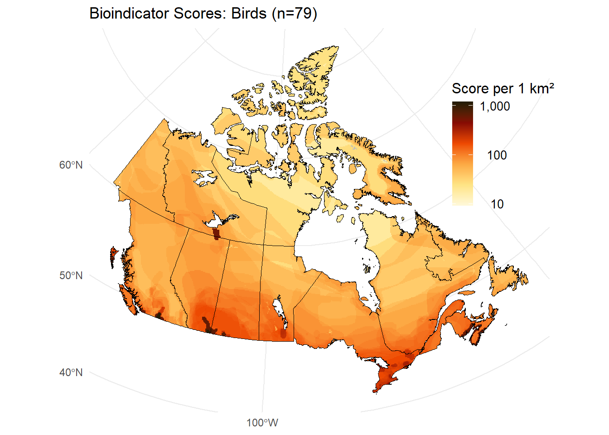
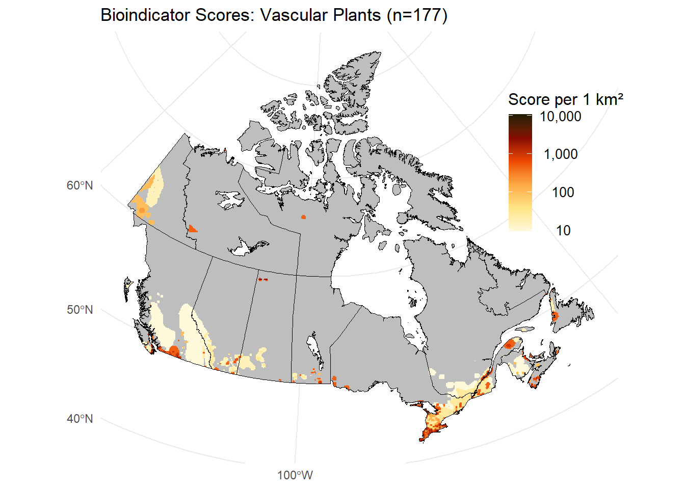
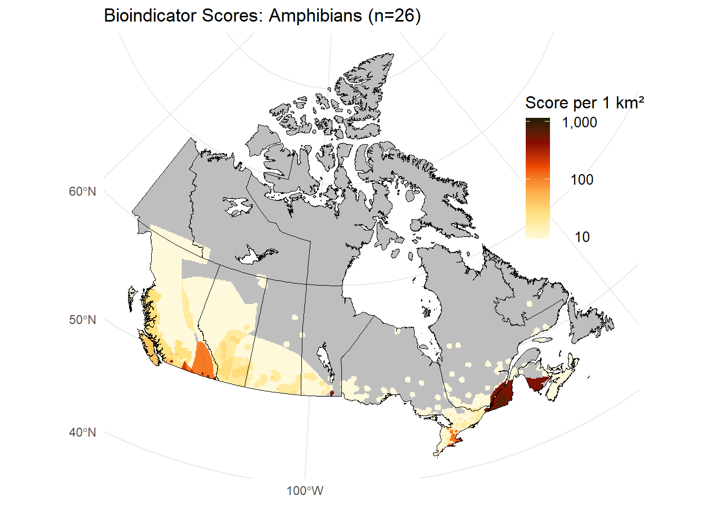
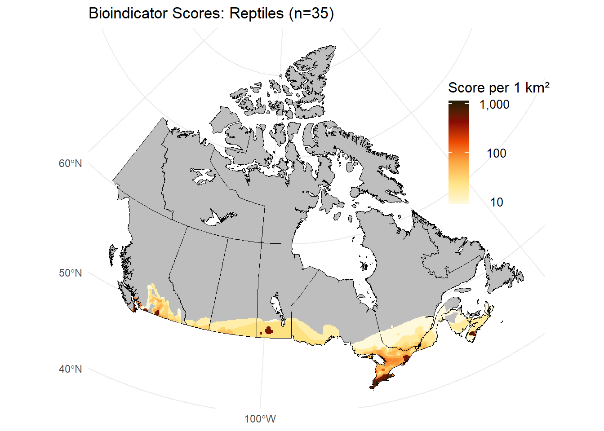
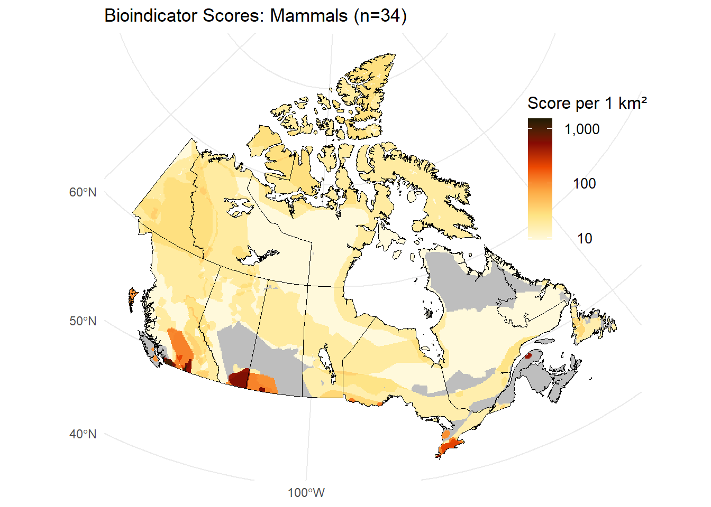
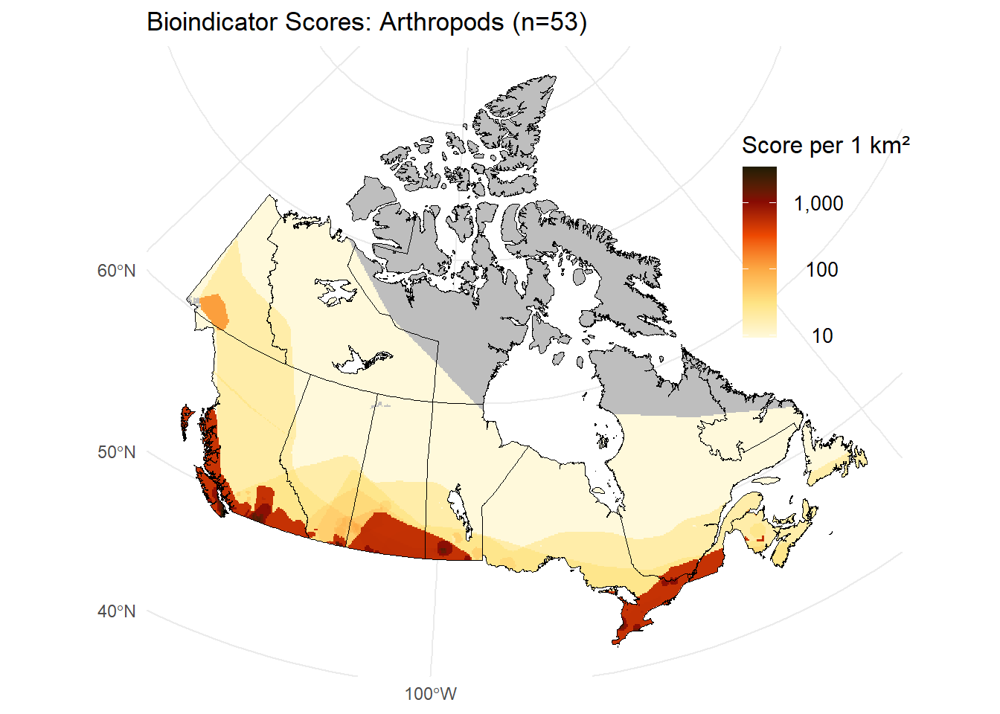
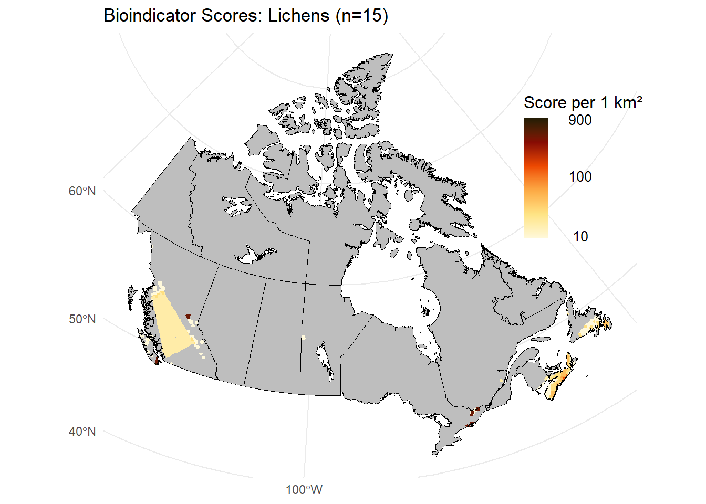
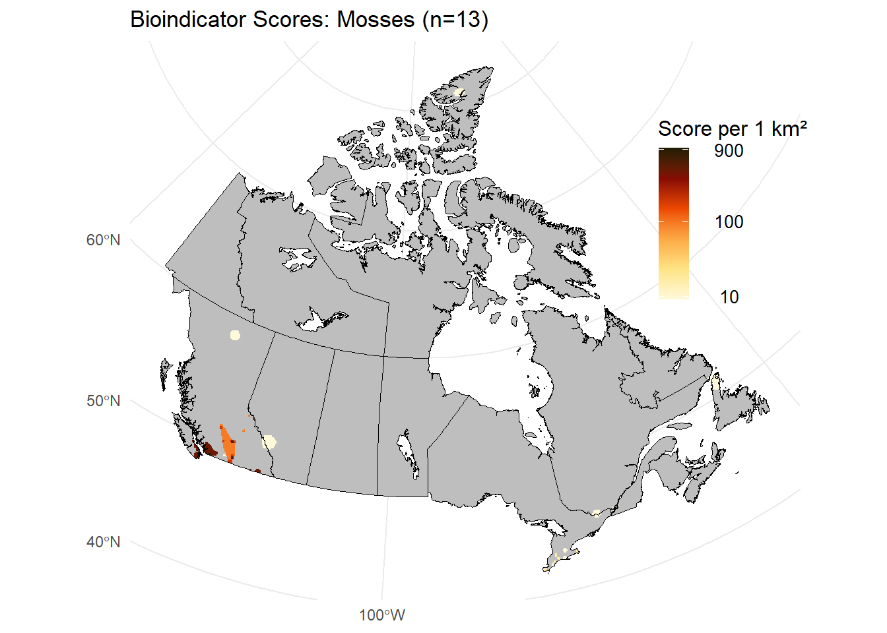

library(terra)
library(sf)
library(exactextractr)
library(dplyr)
library(rnaturalearth)
library(ggplot2)Static and Interactive Mapping of SAR
Overview: Static Maps
This section generates static maps of SAR bioindicator scores across Canada on a 10 × 10 km (100 km²) grid.
- Original scores were computed per 100 km²; for these maps, they are rescaled to represent scores per 1 km².
- All maps use log10-transformed scores to enhance contrast.
- Legends display original (non-log) values for readability.
- Maps are produced for all SAR combined and for each major taxonomic group.
Inputs
outputs/output_grid_sf_score.rds: Spatial data with SAR scoresdata/Master_list_SAR.csv: Taxonomic classification of SAR
Load Libraries
Prepare and Clean Data
Read in File
# Load in grid scores and master data
combined <- readRDS("data/output_grid_sf_score.rds")
species_master <- read.csv("data/Master_list_SAR.csv")Clean Data: Remove Eskimo Curlew
Remove the Eskimo Curlew from analysis. It is retained in the dataset for archival purposes.
# Optional to start - remove Eskimo Curlew
species_to_remove <- "Eskimo_Curlew"
# Find matching columns
value_col_to_remove <- grep(paste0("^value_", species_to_remove), names(combined), value = TRUE)
presence_col_to_remove <- grep(paste0("^presence_", species_to_remove), names(combined), value = TRUE)
# Subtract the value column from sum_values
combined$sum_values <- combined$sum_values - combined[[value_col_to_remove]]
# Remove the columns
combined <- combined %>% select(-all_of(c(value_col_to_remove, presence_col_to_remove)))Map: All Species (100 km²)
Prepare Data and Log Scores
# Load grid and start here if not removing Eskimo Curlew
# Provincial boundaries and reproject to match grid
provinces <- ne_states(country = "Canada", returnclass = "sf")
provinces <- st_transform(provinces, st_crs(combined))
# Log10 transform for plotting
combined$log_sum_values <- log10(combined$sum_values)
# Define legend breaks based on data range
score_breaks <- c(1000, 10000, 100000, 1000000)
range_vals <- range(combined$sum_values[combined$sum_values > 0], na.rm = TRUE)
score_breaks <- score_breaks[score_breaks >= range_vals[1] & score_breaks <= range_vals[2]]
log_breaks <- log10(score_breaks)
# Function to pad legend labels for alignment
pad_labels_right <- function(labels, width = 7) {
sapply(labels, function(x) {
label_text <- formatC(x, format = "f", big.mark = ",", digits = 0)
n <- width - nchar(label_text)
n <- ifelse(n < 0, 0, n) # no negative repeats
paste0(strrep("\u00A0", n), label_text)
})
}Plot at 100km²
# Plot log-scored data with original score legend (100km²)
ggplot(data = combined) +
geom_sf(aes(fill = log_sum_values), color = NA) +
geom_sf(data = provinces, fill = NA, color = "black", size = 0.1) +
scale_fill_gradientn(
colours = c("#fff9db", "#fee485", "#fca944", "#ed4801", "#860a03", "#221c05"),
breaks = log_breaks,
labels = pad_labels_right(format(score_breaks, big.mark = ",", scientific = FALSE)),
na.value = "grey",
guide = guide_colorbar(
label.position = "right",
label.hjust = 0
)
)+
theme_minimal() +
labs(
title = "Bioindicator Scores (n=441)",
fill = "Score per 100 km²"
) +
theme(
legend.position = c(0.9, 0.7),
legend.title = element_text(size = 12),
legend.text = element_text(size = 10),
)Map: All Species (1 km²)
Scores scaled to 1 km².
# Per 1km2
combined$sum_values_scaled <- combined$sum_values / 100
combined$log_sum_values_scaled <- log10(combined$sum_values_scaled)
# Adjust breaks for scaled data
score_breaks_scaled <- score_breaks / 100
# Filter breaks within the scaled data range
range_vals_scaled <- range(combined$sum_values_scaled[combined$sum_values_scaled > 0], na.rm = TRUE)
score_breaks_scaled <- score_breaks_scaled[score_breaks_scaled >= range_vals_scaled[1] & score_breaks_scaled <= range_vals_scaled[2]]
log_breaks_scaled <- log10(score_breaks_scaled)
# Plot 1 km² scores
ggplot(data = combined) +
geom_sf(aes(fill = log_sum_values_scaled), color = NA) +
geom_sf(data = provinces, fill = NA, color = "black", size = 0.1) +
scale_fill_gradientn(
colours = c("#fff9db", "#fee485", "#fca944", "#ed4801", "#860a03", "#221c05"),
breaks = log_breaks_scaled,
labels = pad_labels_right(format(score_breaks_scaled, big.mark = ",", scientific = FALSE)),
na.value = "grey",
guide = guide_colorbar(
label.position = "right",
label.hjust = 0
)
) +
theme_minimal() +
labs(
title = "Bioindicator Scores (n=441)",
fill = "Score per 1 km²"
) +
theme(
legend.position = c(0.9, 0.7),
legend.title = element_text(size = 12),
legend.text = element_text(size = 10),
)
Maps: Taxon-Specific (1 km²)
The following section generates maps by taxonomic group. The breaks and legends are specific to each taxon.
Individual taxa include:
- Birds
- Vascular Plants
- Amphibians
- Reptiles
- Mammals
- Arthropods
- Lichens
- Mosses
- Molluscs
Birds: Full Code and Map
## Taxon Maps
# Load grid
combined <- readRDS("data/output_grid_sf_score.rds")
# Prepare column keys
species_columns <- grep("^presence_", names(combined), value = TRUE)
column_key <- gsub("^presence_", "", species_columns)
# Clean species names in master
species_master <- species_master %>%
mutate(column_key = gsub("[-,./'() ]", "_", Common_name))
# Filter for birds in master list
bird_keys <- species_master %>%
filter(Taxon == "Birds") %>%
pull(column_key)
# Corresponding value columns for birds
bird_value_cols <- paste0("value_", bird_keys)
bird_value_cols <- bird_value_cols[bird_value_cols %in% names(combined)]
# Remove Eskimo Curlew
bird_value_cols <- bird_value_cols[bird_value_cols != "value_Eskimo_Curlew"]
# Create bird score (raw and log10-transformed)
bird_grid <- combined %>%
mutate(bird_score = rowSums(across(all_of(bird_value_cols)), na.rm = TRUE) / 100) %>%
mutate(
bird_score = ifelse(bird_score == 0, NA, bird_score),
log_bird_score = log10(bird_score)
)
# Set custom breaks for the legend
score_breaks <- c(10, 100, 1000)
log_breaks <- log10(score_breaks)
# Custom label padding
pad_labels_right <- function(labels, width = 5) {
sapply(labels, function(x) {
label_text <- formatC(x, format = "f", big.mark = ",", digits = 0)
n <- width - nchar(label_text)
n <- ifelse(n < 0, 0, n)
paste0(strrep("\u00A0", n), label_text)
})
}
# Province outline
provinces <- ne_states(country = "Canada", returnclass = "sf") %>%
st_transform(st_crs(combined))
# Plot bird map with log scale
ggplot(data = bird_grid) +
geom_sf(aes(fill = log_bird_score), color = NA) +
geom_sf(data = provinces, fill = NA, color = "black", size = 0.1) +
scale_fill_gradientn(
colours = c("#fff9db", "#fee485", "#fca944", "#ed4801", "#860a03", "#221c05"),
breaks = log_breaks,
labels = pad_labels_right(score_breaks),
na.value = "grey",
guide = guide_colorbar(
label.position = "right",
label.hjust = 0
)
) +
theme_minimal() +
labs(
title = "Bioindicator Scores: Birds (n=79)",
fill = "Score per 1 km²"
) +
theme(
legend.position = c(0.9, 0.7),
legend.title = element_text(size = 12),
legend.text = element_text(size = 10)
)
Other Taxa: Maps
Following the same workflow as the bird example, static maps were generated for all remaining taxa. Each map shows log₁₀-scaled bioindicator scores per 1km².







Outputs: Static Maps
The following 11 static maps are generated:
Static_Map_Amphibians_1km_Log.pdfStatic_Map_Arthropods_1km_Log.pdfStatic_Map_Birds_1km_Log.pdfStatic_Map_Lichens_1km_Log.pdfStatic_Map_Mammals_1km_Log.pdfStatic_Map_Molluscs_1km_Log.pdfStatic_Map_Mosses_1km_Log.pdfStatic_Map_Plants_1km_Log.pdfStatic_Map_Reptiles_1km_Log.pdfStatic_Map_SAR_1km2.pdfStatic_Map_SAR_100km2.pdf
Interactive Maps Overview
This section outlines the creation of interactive maps displaying the distribution of SAR bioindicator scores across Canada. The grid resolution is 10 km x 10 km (100 km²). All scores are calculated over 100 km² grid cells and have been scaled to 1 km².
Note: The interactive Leaflet maps are too large to render directly in this RMarkdown document. They are available for download on Dropbox.
Input Files
outputs/output_grid_sf_score.rds: Spatial data with SAR scoresdata/Master_list_SAR.csv: Taxonomic classification of SAR
Interactive Map: All Species
Load Libraries
library(leaflet)Warning: package 'leaflet' was built under R version 4.5.2library(dplyr)
library(sf)
library(htmlwidgets)Warning: package 'htmlwidgets' was built under R version 4.5.2Read in Files
# Load in grid scores and master data
combined <- readRDS("data/output_grid_sf_score.rds")
species_master <- read.csv("data/Master_list_SAR.csv")Data Preparation
# Reproject to lat/long for leaflet
combined <- st_transform(combined, crs = 4326)
# Get list of all species we have data for
species_columns <- grep("^presence_", names(combined), value = TRUE)
## When presence/absence was extracted, all spaces and characters were replaced with '_'
## To display names without underscores we have to create a dataframe that has the names we want
## displayed along with what the names currently are (i.e. Piping Plover from Piping_Plover)
# Create a list with these species (remove presence_ from the front)
column_key <- gsub("^presence_", "", species_columns)
# Replace all spaces to mimic current naming convention
species_master <- species_master %>%
mutate(column_key = gsub("[-,./'() ]", "_", Common_name))
species_master_filtered <- species_master %>%
filter(column_key %in% column_key)
lookup_table <- setNames(
paste0(
species_master_filtered$Common_name,
" (<b>", species_master_filtered$SAR_status, "</b>)"
),
species_master_filtered$column_key
)
# Convert all presence_ columns to logical (TRUE/FALSE)
combined <- combined %>%
mutate(across(all_of(species_columns), ~ as.logical(.)))
# Initialize map
leaflet_map <- leaflet() %>%
addProviderTiles(providers$CartoDB.Positron)
# Add "All Species" layer
grid_all_species <- combined %>%
mutate(score = rowSums(across(starts_with("value_")), na.rm = TRUE) / 100) %>%
filter(score > 0) # Drop empty cells
# Create popup info for All Species layer
grid_all_species <- grid_all_species %>%
rowwise() %>%
mutate(popup_info = {
species_names <- c()
for (species_column in species_columns) {
raw_name <- gsub("^presence_", "", species_column)
if (!is.null(get(species_column)) && get(species_column) && raw_name %in% names(lookup_table)) {
species_names <- c(species_names, lookup_table[raw_name])
}
}
species_html <- if (length(species_names) == 0) {
"No species present"
} else {
paste(species_names, collapse = "<br>")
}
paste0(
"<b>All Species Score (per km²):</b> ", round(score, 2), "<br><br>",
"<b>Species Present:</b><br>", species_html
)
}) %>%
ungroup()
# Color palette for All Species
pal_all_species <- colorNumeric(
palette = c("#fee485", "#ed4801", "#860a03", "#221c05"),
domain = range(grid_all_species$score, na.rm = TRUE),
na.color = "grey"
)Create Leaflet
# Add the All Species layer
leaflet_map <- leaflet_map %>%
addPolygons(
data = grid_all_species,
fillColor = ~pal_all_species(score),
weight = 0.5,
color = "lightgrey",
fillOpacity = 0.7,
popup = ~popup_info,
group = "All Species"
)Save Leaflet as .html
# Save file
file_path <- "outputs/interactive_map_all.html"
saveWidget(leaflet_map, file = file_path, selfcontained = TRUE)Interactive Map: Taxon Toggles
This leaflet has toggles for the varying taxa that can be turned off and on.
Important Note: When toggling on layers, the top layer takes priority. Toggled on maps can not be combined, it is purely for comparison sake.
Define Taxa of Interest
To improve performance, only the most common taxa of interest are shown on these maps. Including all taxa would make the map too slow and difficult to use.
taxon_types <- c("Mammals", "Birds", "Reptiles", "Amphibians", "Vascular Plants")Loop Through Taxa
for (taxon in taxon_types) {
taxon_keys <- species_master %>%
filter(Taxon == taxon) %>%
pull(column_key)
taxon_presence_cols <- paste0("presence_", taxon_keys)
taxon_value_cols <- paste0("value_", taxon_keys)
# Score for this taxon
grid_taxon <- combined %>%
mutate(score = rowSums(across(all_of(taxon_value_cols)), na.rm = TRUE) / 100) %>%
filter(score > 0)
# Popups
grid_taxon <- grid_taxon %>%
rowwise() %>%
mutate(
popup_info = {
species_names <- c()
for (species_column in taxon_presence_cols) {
raw_name <- gsub("^presence_", "", species_column)
if (!is.null(get(species_column)) && get(species_column) && raw_name %in% names(lookup_table)) {
species_names <- c(species_names, lookup_table[raw_name])
}
}
species_html <- if (length(species_names) == 0) {
"No species present"
} else {
paste(species_names, collapse = "<br>")
}
paste0(
"<b>", taxon, " Score (per km²):</b> ", round(score, 2), "<br><br>",
"<b>Species Present:</b><br>", species_html
)
}
) %>%
ungroup()
# Color palette for this taxon
pal_taxon <- colorNumeric(
palette = c("#fee485", "#ed4801", "#860a03", "#221c05"),
domain = range(grid_taxon$score, na.rm = TRUE),
na.color = "grey"
)
# Add to map
leaflet_map <- leaflet_map %>%
addPolygons(
data = grid_taxon,
fillColor = ~pal_taxon(score),
weight = 0.5,
color = "lightgrey",
fillOpacity = 0.7,
popup = ~popup_info,
group = taxon
)
}Layer Options
# Turn all layers off initially
leaflet_map <- leaflet_map %>%
hideGroup("All Species") %>%
hideGroup(taxon_types) %>%
addLayersControl(
overlayGroups = c("All Species", taxon_types),
options = layersControlOptions(collapsed = FALSE)
)Save
saveWidget(leaflet_map, file = "outputs/interactive_map_all_with_taxa.html", selfcontained = TRUE)Outputs
The following interactive maps are generated:
interactive_map_all_with_taxa.html: Contains toggleable layers for All Species and each key taxon (Mammals,Birds,Reptiles,Amphibians,Vascular Plants). This is a larger file and may take longer to render.interactive_map_all.html: Displays the All Species map with clickable popups showing the score and species present. This is a lighter map suitable for quick loading.